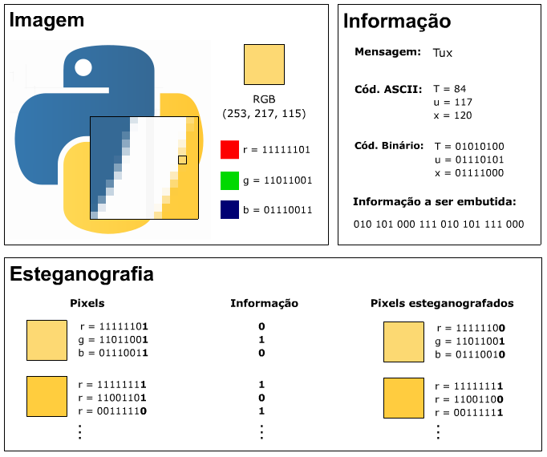
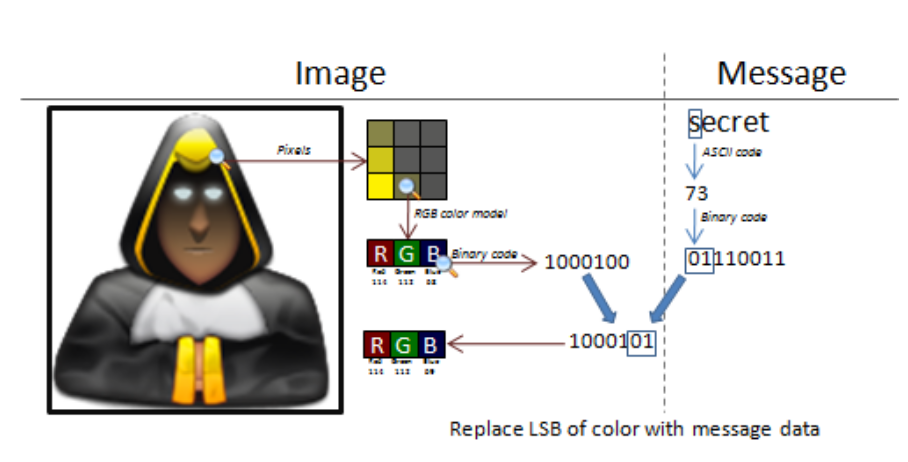
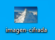
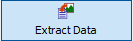
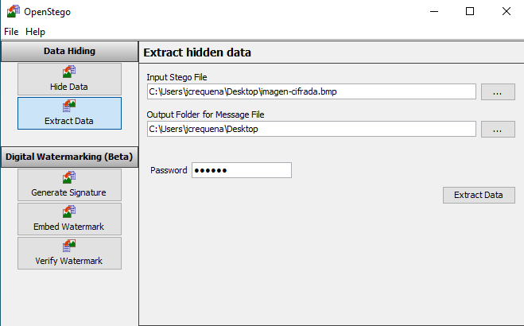
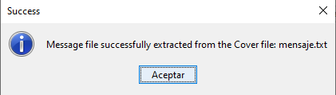
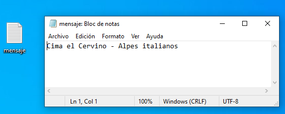

6.1.5 Esteganografía
La esteganografía es una tecnología que oculta un mensaje dentro de un objeto, un texto o una imagen.
La forma más fácil de diferenciar los dos es recordar que la esteganografía oculta no solo el contenido del mensaje, sino también la mera existencia de un mensaje. Las aplicaciones esteganográficas originales utilizaban “cifrados nulos”, o texto claro.

Fuente: http://wstj-inforense.blogspot.com/2015/05/elementos-de-la-esteganografia.html

2. Ejemplo práctico con openstego
En este ejemplo práctico, se utiliza la aplicación openstego para ocultar un mensaje en una imagen.
| Recursos a utilizar | |
| OpenStego | Imagen del Cervino Alpes. |
En primer lugar, hay que acceder al sitio web https://www.openstego.com/ para descargar la aplicación para su instalación en el equipo desde donde se desea realizar el trabajo. La interfaz de la aplicación se puede observar en la siguiente figura.

Figura 1. Aplicación openstego.
A continuación, hay que crear un fichero con el mensaje que se desea codificar en la imagen, para este caso de ejemplo, mediante el Notepad se crea el mensaje de la siguiente figura.

Figura 2. Fichero con el mensaje a ocultar.
Una vez creado el fichero, hay que cargarlo en la caja de texto 'Message File', además, hay que cargar la imagen donde se quiere ocultar el mensaje, para este caso de ejemplo, se utiliza la imagen matterhorn-3019429_640.bmp obtenida de Pixabay y seleccionar la imagen que se desea obtener, para este caso, imagen-cifrada.bmp.
A continuación, hay que elegir el cifrado simétrico de bloque, para este caso de ejemplo, se selecciona AES de 256 bits.
Por último, hay que introducir la contraseña de cifrado.

Figura 3. Introducción de los datos.
Para comenzar el proceso, hay que pulsar el botón 'Hide Data'. Una vez finalice el mismo, nos aparece un mensaje confirmando que se ha obtenido el fichero de salida (Figura
 |
 |
Figura 4. Mensaje de confirmación del cifrado del mensaje en la imagen.
|
Para obtener el mensaje cifrado a partir de la imagen obtenida en el anterior proceso, hay que pulsar el botón 'Extrat Data'. A continuación, hay que añadir la imagen con el mensaje cifrado y el directorio donde se guardará el mensaje. Por último, hay que introducir la contraseña que se utilizó para el cifrado. |
 |

Figura 5. Introducción de los datos.

Figura 6.Mensaje informativo de fin del proceso.
Como se puede observar en la siguiente figura, se obtiene un fichero con el mensaje original cifrado en la imagen.

Figura 7. Fichero obtenido.
Otra aplicación para la esteganografía es steghide,
Obra publicada con Licencia Creative Commons Reconocimiento No comercial Compartir igual 4.0